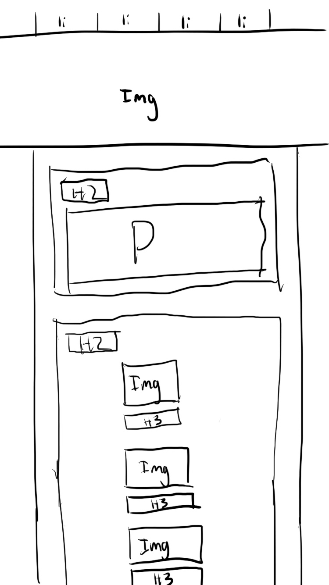
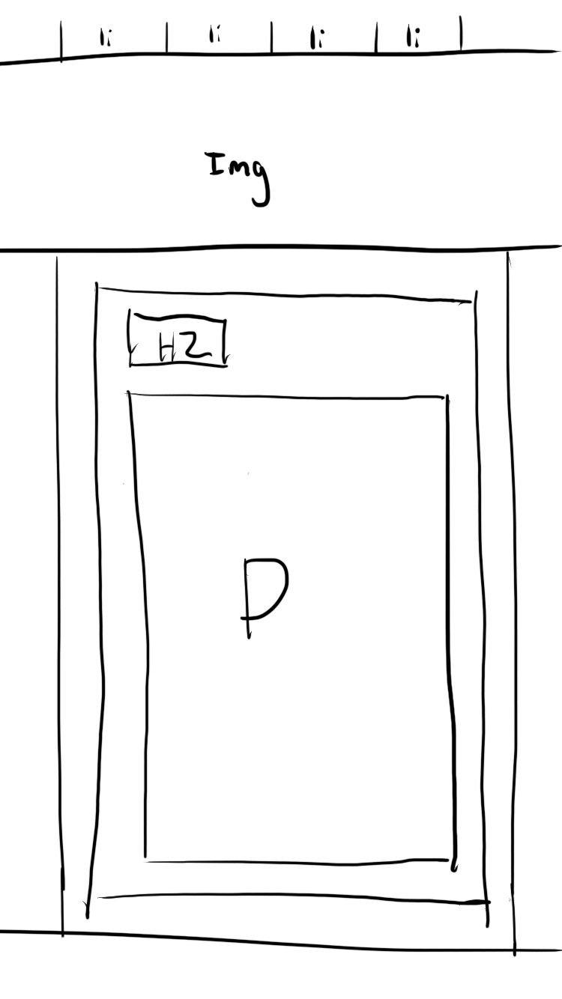
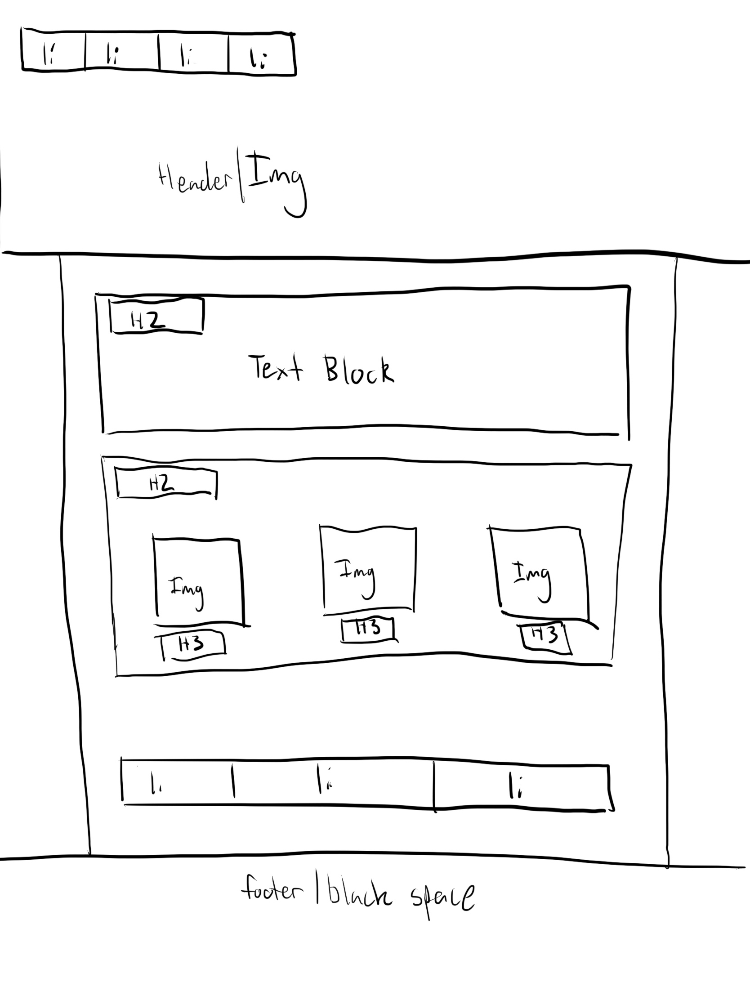
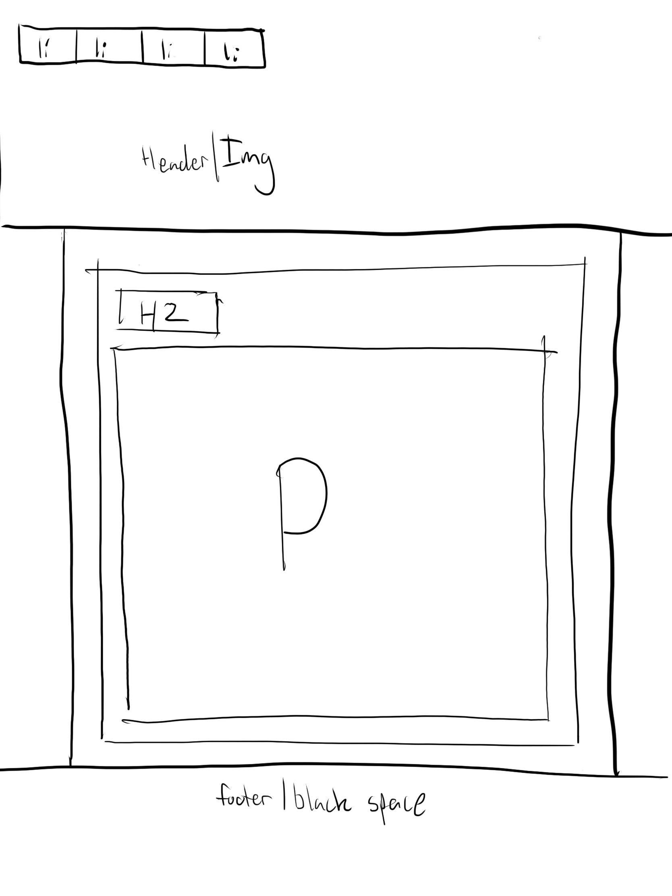

trending
Design to Web
What is a responsive site?
Responsive sites will adjust themselves automatically to fit any screen you're looking at it with, allowing you to see an optimized version for your device.
What is mobile first design?
When you build a website from scratch and build it with mobile devices as your first priority this is mobile first design. It makes it easier to adapt later into larger screen sizes vs the opposite method.
What are frameworks?
Frameworks are a predefined set of CSS instructions which are used to more rapidly build websites. Different frameworks have different stratergies, Skeleton is built to be lightweight and not feature-heavy. Pros include having your work cut out for you, cons include extra website load time from potentially unused css classes.
What are wireframes?
Wireframes give us an understanding of the goal for our website and what elements we'll be using to meet the specific end requirements of our/our clients website. It's like sketching before creating artwork.
My mobile index and blog wireframe:
 My desktop index and blog wireframe:
 Difficulties implementing wireframe features:
I had many difficulties implementing some of my wireframes features such as the floating labels with black background, and keeping everything in line. The one features I've not yet mastered is making a hovering menu, or one that changes based on screen size.